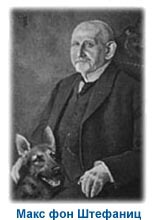
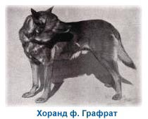
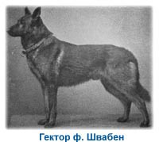
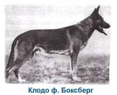

Зарегистрирован в FCI: 12.07.2012 г.
Владелец: Азарко Евгений Михайлович
Республика Беларусь, г.Слоним
Телефон: +37529-7075805(МТС); +37529-3534884(Вел)
Email: Azarko83@mail.ru
Понять, что же такое, собственно, немецкая овчарка, можно, лишь зная, как и для чего были созданы эти уникальные служебные собаки.
Много лет назад в Германии существовали собаки, которые охраняли овец. Они различались по росту, поставу ушей и окрасу. Объединяло их одно — быстрота, чрезвычайная работоспособность и управляемость.
Время от времени предпринимались попытки создать из этого "разношерстного племени" единую породу, однако они, как правило, оканчивались неудачей.
 В 1890 году молодой ротмистр Макс фон Штефаниц решил попробовать свои силы в разведении национальных немецких овчарок. Штефаниц был весьма образованным человеком и, кроме того, давно интересовался овчарками и хорошо разбирался в них. Наибольший интерес у Штефаница вызывала способность этих собак к работе, развившаяся у них за столетия постоянного труда.
Подлинным днем рождения немецкой овчарки по праву считается 3 апреля 1899 года. В этот день Макс фон Штефаниц и его друг Артур Мейер развлекались в Карлсруэ и зашли на выставку собак. Осматривая выставку, они обратили внимание на средних размеров кобеля, желто-серого, величиной с волка, который стоял возле своего хозяина. Хозяин объяснил, что кобель является рабочей собакой с большими способностями и, несмотря на сходство с волком, имеет врожденную склонность к служению человеку. Собаку звали Гектор Линкерхайн. Штефаниц купил Гектора для своей псарни, впоследствии он получил имя Хоранд ф. Графрат.
Макс фон Штефаниц так писал об этой собаке в своей книге "Немецкая овчарка": "Хоранд являлся для тогдашнего периода воплощением самых роскошных мечтаний. Для того времени он был крупной собакой, 60-61 см в холке, правильно сложен, пропорционален, с крепким сильным костяком, красивыми линиями и чистой по форме головой, с крепкой нервной системой. Прекрасным было его поведение — он отличался безграничной преданностью хозяину и всеми другими достоинствами. К сожалению, в молодости он не получил воспитания и это отразилось на его поведении, но, тем не менее, в руках своего нового  хозяина он был послушен и ловил каждый его знак, хотя не упускал возможности учинить безобразную драку с собаками и был необуздан в травле. Всегда деятельный, всегда в движении, добродушный к безобидным людям, но не льстец, весельчак и всегда влюбленный в хозяина. Посторонний человек, наблюдавший за ним, испытывал большое удовольствие, для хозяина же он был зачастую источником досады. Но его недостатки были недостатками воспитания, а не врожденными особенностями. Он страдал больше от безделья и был полон жажды деятельности, но если мы с ним чем-либо занимались, он сразу же становился послушной собакой."
Тогда же, в 1899 году, Макс фон Штефаниц вместе со своим другом Артуром Мейером официально утверждает Союз владельцев немецкой овчарки и становится его первым президентом. В том же году впервые была проведена выставка овчарок, победителем которой стал Хоранд. Было организовано ведение племенной книги породы. Хоранда Штефаниц зарегистрировал в ней первым — именно эта собака должна была основать базу и создать единый тип породы.
 Чтобы уравнять тип породы, Штефаниц подбирал Хоранду для вязок однотипных с ним сук. Сын Хоранда, Гектор ф. Швабен, стал вторым победителем выставки овчарок, а сыновья Гектора — Беовульф, Хайнц ф. Штаркенбург и Пилот-III, — стали основателями трех основных линий, ведущих свое начало от Хоранда.
В первые годы необходимо было тщательно контролировать тесное родственное и линейное разведение, обойтись без которого было невозможно, так как оно давало возможность очень быстро выработать единый тип породы. Как пример можно привести победителя 1906—1907 годов Роланда ф. Штаркeнбург, чисто черного окраса, который был получен в тесном инбридинге на Хоранда. В дальнейшем сын Роланда Хеттель ф. Уккермарк положил начало разведению черно-желтых овчарок.
В 1925 году Штефаниц обратил внимание на то, что тип немецкой овчарки постепенно стал меняться в худшую сторону: собаки становятся крупными и теряют свои пропорции. Поэтому на выставке победителей 1925 года он выбирает собаку, которая значительно отличалась по типу от предыдущих победителей.  Этот внешне неброский кобель был среднего роста, имел красивые пропорции тела, благородную линию спины, совершенные движения и неустрашимый характер. Клодо ф. Боксберг был первой модельной немецкой овчаркой; как писал Штефаниц, "Его несравненный штамп остался на всех его потомках".
Сын Клодо, Утц ф. Хаус Шюттинг, победитель 1929 года, был также знаменитым производителем, и его потомки обладали отличными качествами. Штефаниц писал: "Картина различия потомков Клодо и Утца, как детей, так и внуков, ясно показывает, как их кровь перекрывает кровь различных матерей. При всех их сыновьях, дочерях и внуках идет одна направляющая линия — сильные, работоспособные, аристократичные, глубокие, растянутые в корпусе собаки с выразительными мордами". Это были собаки нового времени, нового этапа в разведении немецких овчарок.
Впервые проведенная в 1899 году в Германии выставка немецких овчарок с тех пор проводится ежегодно. Выигравшие старший ринг получают звание "Победитель" и "Победительница" года. На первых выставках судил овчарок сам Штефаниц.
"Ротмистр Штефаниц был судьей-экспертом и благодаря своей одаренности он мог направлять судейство в нужное русло, сочетая его с практическим разведением, — писала его дочь, Герта фон Штефаниц, в книге "Немецкая овчарка сегодня". — Кроме того, он знал, что ориентир на разведение дает победитель выставки и что каждый победитель за год покроет большее количество сук, чем любой другой кобель. Благодаря этому Штефаниц мог управлять развитием породы и избегать возможных ошибок. Если же ошибки все же проскакивали или если появлялось отклонение от нужного типа собак, он выбирал овчарок, не имеющих таких недостатков, с тем, чтобы они в дальнейшем не распространялись в породе. Вскоре Штефаниц стал проверять на выставках родословные собак, чтобы выяснить, насколько xopoшиe или плохие качества в собаке являются наследственными и распространяются далее в генерациях. "Судья на выставке должен хорошо разбираться в этих вопросах", — считал Штефаниц. Большое внимание всегда уделялось поведению и темпераменту собаки."
Штефаниц вообще никогда не интересовался чистой красотой собаки. Он считал, что у немецкой овчарки должно быть здоровое тело с правильными пропорциями для наиболее продуктивной работы. Для проверки поведения и работоспособности Штефаниц вводит испытание на послушание.
Затем в интересах породил были организованы соревнования по дрессировке и Союз владельцев немецкой овчарки учредил призы по различным видам служб. Одновременно увеличивается также количество племенных выставок, учреждаются призы для всех классов собак и приз для лучшего племенного производителя.
Между 1918 и 1926 годами популяция породы очень возросла и питомники работали на полную мощность, производя щенков для самых широких потребностей. Корыстолюбивые заводчики видели в щенках только товар и не заботились об их качестве. В 1926 году происходит спад покупателей — овчарка стала приобретать плохую репутацию из-за своего поведения и экстерьера. Тогда Штефаниц вводит проверку племенной пригодности собаки и тем самым приостанавливает эту тенденцию.
В тридцатых годах в Германии началось распространение национал-социалистического движения. Многие члены Союза владельцев немецкой овчарки были нацистами и всячески старались помешать созданию международного союза любителей этой породы. Они преследовали Штефаница, растаптывали его труд, которому была посвящена вся его жизнь, при попытках сопротивления угрожали ему концлагерем. Штефаниц не мог вынести того, что 36 лет его работы, казалось, потрачены впустую. 22 апреля 1936 года, в день основания своего Союза, он умер.
Макс фон Штефаниц проделал колоссальную работу. Он положил начало разведению немецких овчарок, опираясь во многом на идеи английских разведенцев собак. Он создал стабильную кинологическую организацию — Союз владельцев немецкой овчарки, разработал его Устав, стандарт породы, впервые организовал ведение племенной книги, так как полагал, что разведение должно базироваться на учении о наследственности, а не на победителях выставок. Ведение племенной книги дало возможность образовать племенную базу немецких овчарок, вести научные исследования по разведению этой породы. Кроме того, стало возможным только чистокровное разведение немецких овчарок через кровные линии, с внесением данных в племенную книгу. Это правило существует и сейчас.
И хотя после войны в Германии осталось только несколько хороших собак, немецкие заводчики-энтузиасты, опираясь на труды Макса фон Штефаница, вновь начали разводить немецких овчарок. Именно благодаря им мы имеем сегодняшнюю немецкую овчарку — универсальную служебную собаку, благородного, преданного друга.
вверх